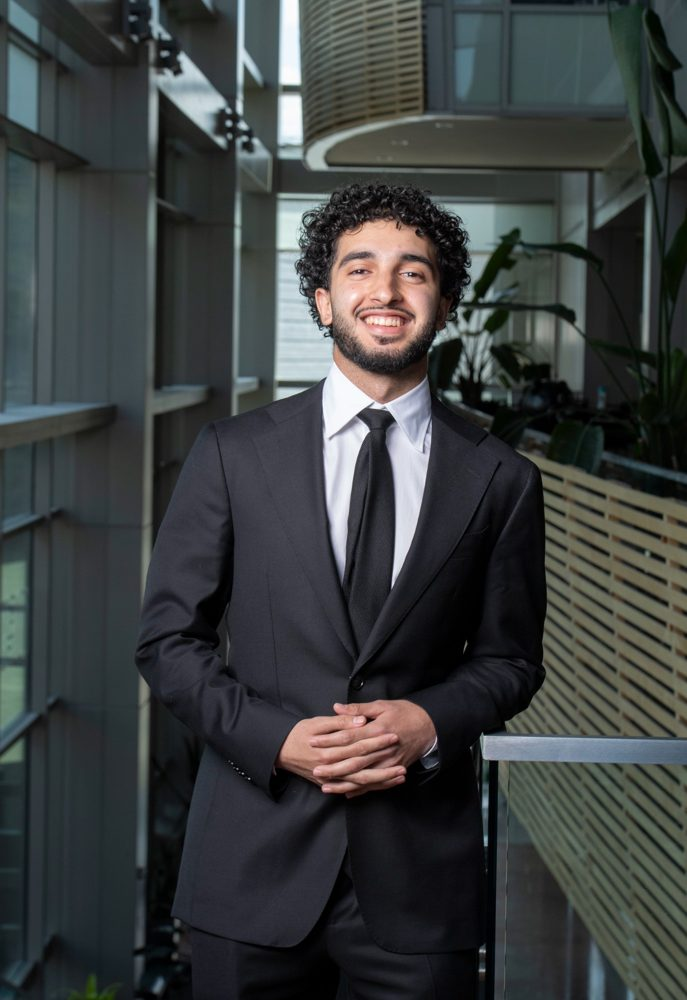

Welcome to My Portfolio

Hi, welcome to my personal portfolio website. My name is Muslim Khzir, and this site is a way for me to share who I am, what I am learning, and the future I am working toward. This portfolio is still new, and I know it is not perfect yet, but I am working on it every day and trying to make it better step by step. I wanted it to feel clean and professional, but also honest and personal. I hope this site gives you a better understanding of my journey, my goals, and the person I am becoming.
I am a Computer Science student at the University of Cincinnati in the College of Engineering and Applied Science. I am currently working toward my Bachelor of Science in Computer Science, and I expect to graduate in May 2027.
This website is meant to show more about me than just my name or resume. It gives visitors a better look at my background, education, skills, experiences, activities, and the goals I am working toward. I want this portfolio to represent who I am as a student and the kind of person I am continuing to become.
Purpose of This Website
The purpose of this website is to introduce myself in a clear, organized, and personal way. My audience includes my instructors, classmates, future employers, recruiters, and just about anyone who wants to learn more about who I am beyond just a resume. I want this site to show my background, education, skills, experiences, and the goals I am working toward.
When visitors come to my website, I want them to understand that I am serious about learning and always open to growth. I am still building my knowledge and improving my skills, but I am motivated to keep getting better. I am interested in using technology to solve problems, create useful projects, and build things that can help people in real life.
Quick Profile
Education: Bachelor of Science in Computer Science at the University of Cincinnati
Expected Graduation: May 2027
Technical Interests: Programming, web design, data analysis, energy technology, software systems, and problem solving
Current Experience: Software & Systems Co-op at MAK Engineering Services and Student Ambassador with EM Marketing
My Main Focus
My main focus right now is becoming more confident as a Computer Science student and future developer. I want to keep improving my programming skills, build better projects, and gain more experience through internships and professional opportunities.
I know progress takes time, but I believe consistency and effort matter for us all, and hopfully this website represents that mindset a little.